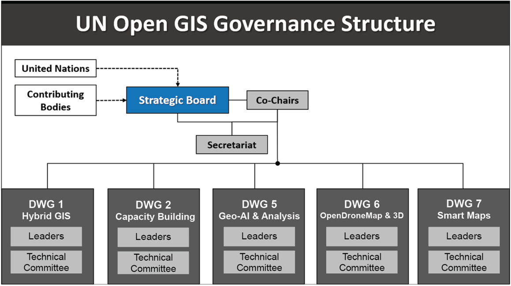

Governance Structure
The UN Open GIS Initiative's governance structure comprises a Strategic Board, Co-Chairs, a Secretariat, and Domain Working Groups organized as follows:
The Founders
The UN Open GIS Initiative was founded through a collaborative effort, bringing together open-source GIS experts from various countries, organizations, and academic institutions to leverage open-source GIS technology in support of UN operations:
- Austria: Institute for Military Geography
- Germany: Bundeswehr Geoinformation Center, Multinational Geospatial Support Group
- Italy: Italian Military Geographic Institute, Italian Army General Staff, Italian National Research Council
- Norway: Norwegian Military Geographic Service
- Sri Lanka: Sri Lankan Army
- Republic of Korea: Korea Research Institute for Human Settlement, OpenGDS
- United States of America: US National Geospatial-Intelligence Agency, US South Command
- United Nations: UNHQ /UNGIS, UNGSC, UNISFA, UNMISS, UNSOS
- UN University
- World Food Programme
- Open-Source Geospatial Foundation(OSGeo)
- Geo4All
- Pusan National University, Republic of Korea
- Politecnico di Milano, Italy
The Major Contributors
Since its establishment, the UN Open GIS Initiative has seen significant contributions from various countries, organizations, institutions, and the private sector, providing technical expertise, tools, and resources to advance the initiative’s goals:
- Finland, The Ministry for Foreign Affairs
- Japan, Geospatial Information Authority
- Republic of Korea, Korea Research Institute for Human Settlement, OpenGDS
- United States of America, US South Command
- United Nations, UN Headquarters/UNGIS, UNGSC, MINUSCA, MONUSCO, MINUSMA, UNISFA, UNMISS, UNSOS, UNVMC
- World Food Programme
- Open-Source Geospatial Foundation(OSGeo)
- OSGeo Japan Chapter
- Geo4All
- OpenDroneMap
- Pusan National University, Republic of Korea
- Politecnico di Milano, Italy
- GeoSolutions, Italy/USA
- Gispo, Finland
The Strategic Board
The Strategic Board (SB) sets the initiative's goals, oversees strategic planning, and manages the creation and termination of working and advisory groups. It guides the election of co-chairs and appointment of the members of the Technical Advisory Group (TAG). It is comprised of representatives from the contributors:
- Alphonse Aka Attron, UNSOS
- Akbar Amini, UNMISS
- Anandavel Kannan, MINUSCA
- HaeKyong Kang, KRIHS, Open GDS-Korea
- Hidenori Fujimura, GSI-Japan, OSGeo Japan Chapter
- Kais Zouabi, UNGSC
- Ki-Joune Li, Pusan National University, OpenGDS-Korea
- Josep Parareda Masnou, UNHQ/UNGIS
- Maria Antonia Brovelli, Politecnico Di Milano, OSGeo
- Serena Coetzee, University of Pretoria, Geo4All
- Zahurul Islam, UNMISS
The Co-Chairs
The initiative has three Co-Chairs; one Co-Chair is appointed from the United Nations OICT (Office for Information and Communications Technology), and the other two are elected from the Strategic Board. The three Co-chairs and the Strategic Board are responsible for leading UN Open GIS Initiative activities:
- Josep Parareda Masnou, since 1 January 2024
- Ariel Anthieni, since 17 July 2025
- Hidenori Fujimura, since 17 July 2025
The Secretariat
The Secretariat is elected by the Strategic Board among personnel from contributing entities. The Secretariat is responsible for supporting the Co-Chairs and the Strategic Board and activities of the UN Open GIS Initiative:
- HaeKyong Kang, Secretary, Korea Research Institute for Human Settlements
- Timur Obukhov, Assistant Secretary, UNHQ/UNGIS
Domain Working Groups
The Domain Working Groups are established by the Strategic Board to conduct the activities related to specific areas of operations of the Open GIS Initiative and include experts in the subject matter. The SB appoints the leader (or co-leaders) for each DWG among the members of the DWG. DWG Leaders are responsible for coordinating the work of the DWG to achieve the objectives of the DWG as assigned by the SB:
- DWG 1 - Hybrid GIS Infrastructure, Timur Obukhov, HaeKyong Kang
- DWG 2 - Capacity Building, Ivan Henrico, Susan Henrico, Diego Gonzalez
- DWG 5 - Geo-AI & Analysis, Maria Antonia Brovelli, Zhongxin Chen, Andrea Manara, Cung Thang
- DWG 6 - OpenDroneMap & 3D, Catalina Ramos, Davide Barbiero
- DWG 7 - Smart Maps, Hidenori Fujimura, Diego Gonzalez
- DWG 8 - Open-source implemetation of IGIF, Ariel Anthieni, Horacio Castellaro